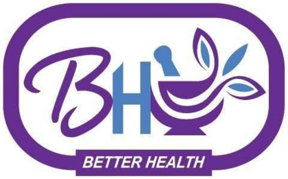

دليل بدائل Push اتنقل لبوابة Better Health
بتفتح لوحدها… لو مافتحتش اضغط على الزرار وسجّل دخولك برقمك وكلمة مرورك.
افتح دليل بدائل Push
بتفتح لوحدها… لو مافتحتش اضغط على الزرار وسجّل دخولك برقمك وكلمة مرورك.
افتح دليل بدائل Push